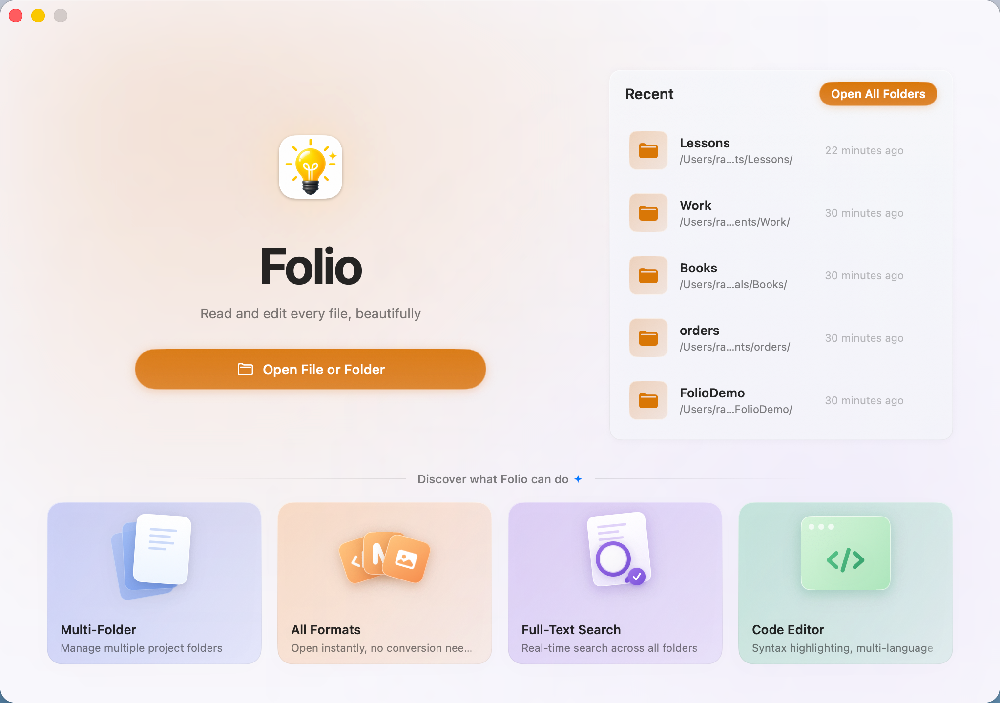
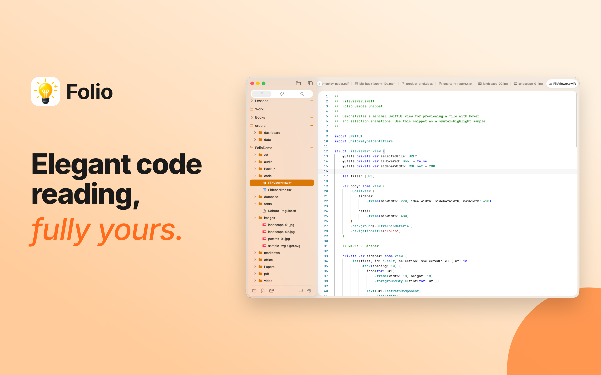
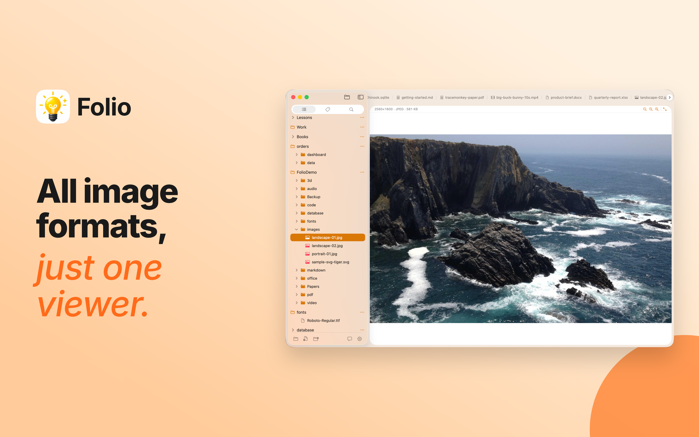
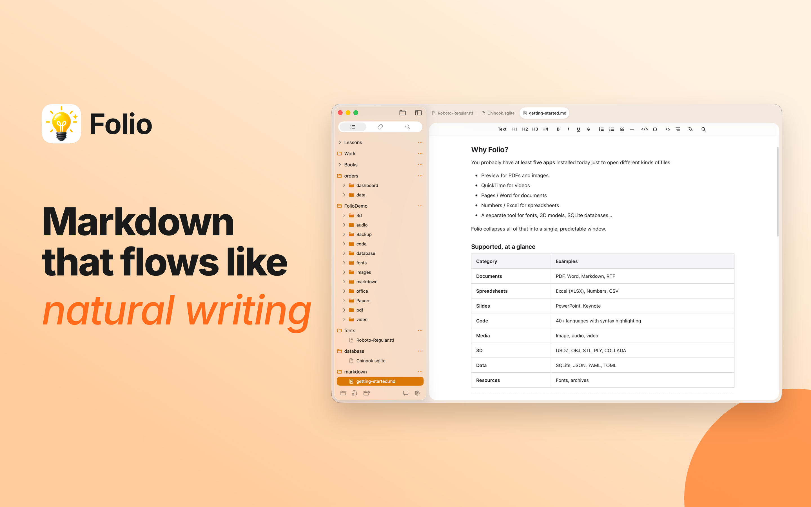
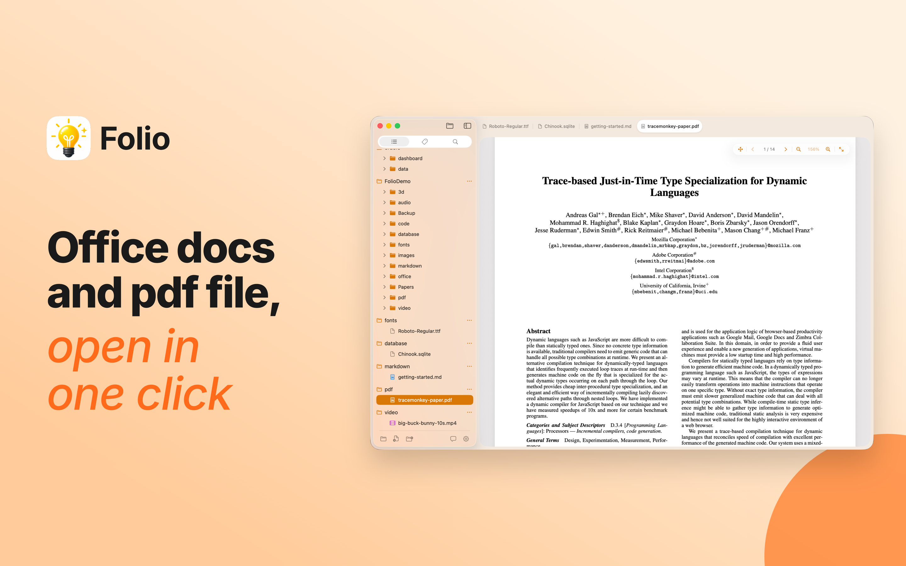
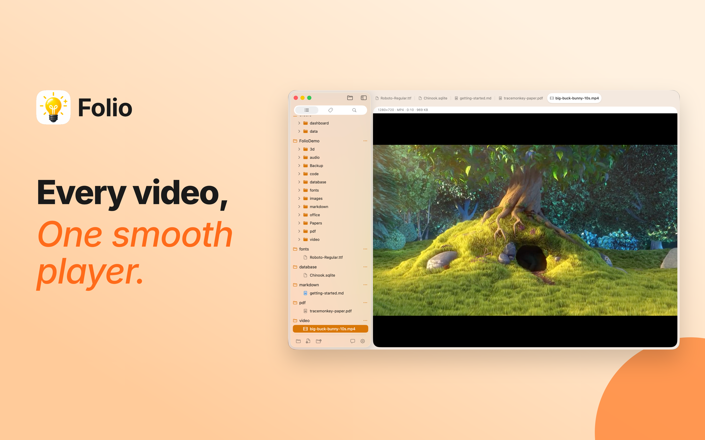
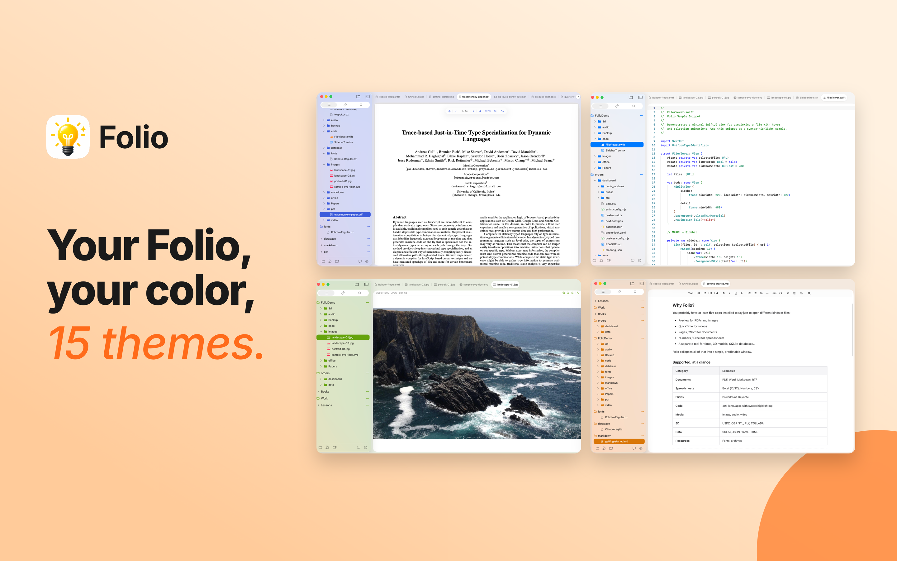

Folio Pro
直接下载 推荐- 包含 Folio 的全部功能
- 终端与 AI 智能体
- 完整 Git 与本地 AI
让你的 Mac 安静下来。把所有你常用的文件——文档、表格、演示稿、PDF、笔记、图片、音乐与视频——全部装进一个窗口。

两个版本用同一套方式阅读、编辑和搜索每个文件。Folio Pro 再加上那些必须走出 App Store 沙盒才能做到的工具。
看见每个文件。
所有格式一个窗口打开，Markdown、代码与笔记可编辑，全文搜索，15 套主题。沙盒运行，由 App Store 自动更新。
看见之后，直接动手。
包含 Folio 的全部能力，外加能跑 AI 智能体的终端、完整 Git、本地模型与语言服务。
每个项目一个标签页。一键切换，回到上次离开的地方——文件夹、滚动位置、上次打开的文件，都还在那里。
一个 app 顶替十几个。文档、表格、演示稿、PDF、笔记、图片、音乐、视频——直接打开就能看。
搜的不只是文件名。笔记里的一句话、表格里的一个数字都能直接命中——跨所有打开的工作空间。
像阅读发表后的文章一样写作。无需分屏预览，所写即所见。
主流编程语言一应俱全。语法着色清爽、缩进对齐整齐——让代码读起来像读散文一样舒服。


再大的图也是秒开。手机照片、相机原图、网络图片、动图、矢量图——一键打开，可缩放、查看拍摄信息、在文件夹里前后翻页。
边写边见。标题、列表、表格、代码块立刻自动美化，没有分屏预览的割裂。内置离线翻译，写作的同时切换语言。


不用等 Office 启动。Word、Excel、PowerPoint、Pages、Numbers、Keynote 和 PDF——双击就能看，干干净净。
主流视频格式直接播放，不用等转码。键盘快捷键、字幕、画中画一应俱全，省电不发烫。


细腻的界面质感，搭配 15 套精心调校的主题。从奶油米到午夜黑、从苔藓绿到墨水蓝——每个文件都有最合适的阅读色温。
每一个细节，都为了让你在文件之间穿梭得更安静、更专注。
每个工作空间记得你的滚动位置和上次打开的文件。
按内容搜索，不止文件名。笔记里的一句话也能瞬间命中。
几个项目同时挂着，左边一棵清晰的文件树。
与系统美学一脉相承的优雅界面。
三维模型可以转着看，字体可以一目了然地试。
电子表格与数据表直接查看、排序、筛选。
几乎你能想到的编程语言都已经准备好。
一键把笔记切换成另一种语言，离线快速。
透明标题栏、阅读宽度可调，让文字成为主角。
Folio Pro 包含 Folio 的全部，再加上只有走出 App Store 沙盒才能做到的事：能跑 AI 智能体的终端、真正的 Git，以及在你 Mac 上运行的本地模型。
在要修改的文件旁边，直接运行 Claude Code、Codex 等命令行工具。
打开的每个仓库都能看提交历史、Diff 与 Blame。
在侧栏里提问，任何文档都能一键总结。
语义搜索、离线翻译与 OCR，在你的 Mac 上运行。
通过 LSP 为 Go、Rust、Python、TS/JS、Java 提供代码智能。
任务放在工作旁边，与菜单栏日历联动。
PDF 转成 Markdown，或保留排版直接翻译。
支持 iCloud 同步，以及更多翻译引擎。
要终端、Git 与本地 AI，选 Folio Pro；只想日常查看和编辑，选 App Store 版 Folio。两个版本目前都免费。
| FolioMac App Store | Folio Pro直接下载 | |
|---|---|---|
| 核心能力 | ||
| 打开所有格式：文档、表格、演示稿、PDF、图片、音乐与视频 | 包含 | 包含 |
| Markdown、代码与笔记编辑 | 包含 | 包含 |
| PDF 工具箱 | 包含 | 包含 |
| 跨工作空间全文搜索 | 包含 | 包含 |
| 自动备份与历史版本 | 包含 | 包含 |
| 15 套主题，深浅自动 | 包含 | 包含 |
| 翻译 | Apple 系统翻译 | + 本地模型与更多引擎 |
| Pro 工具 | ||
| 终端与 AI 标签页（Claude Code、Codex…） | 不包含 | 包含 |
| Git：提交历史、Diff、Blame | 不包含 | 包含 |
| 侧栏提问与文档总结 | 不包含 | 包含 |
| 本地模型：语义搜索、OCR | 不包含 | 包含 |
| 语言服务（LSP） | 不包含 | 包含 |
| 任务，与菜单栏日历联动 | 不包含 | 包含 |
| PDF 转 Markdown、保留排版的 PDF 翻译 | 不包含 | 包含 |
| iCloud 同步 | 不包含 | 包含 |
| 获取方式 | ||
| 分发 | App Store · 沙盒 | 直接下载 |
| 系统要求 | macOS 15+ | macOS 15+ · Apple 芯片 |
| 价格 | 目前免费 | 目前免费 |
Folio 是一款 Mac 文件浏览器。一个应用里就能打开文档、表格、演示稿、PDF、笔记、代码、图片、音乐和视频——把你日常要切换的十几个 app 收纳进一个安静、专注的窗口。
系统自带的预览只能「看一眼就关」。Folio 是为长时间停留打造的工作空间：多标签、跨文件搜索、双向编辑笔记、15 套阅读主题——把「打开一下就走」变成「打开就能开始工作」。
可以。笔记和代码完全可编辑。Office 文档与 PDF 目前是高保真预览，下一版本会开放标注与表单填写。
Folio 支持 macOS 15 及以上版本。Folio Pro 内置本地模型，需要 Apple 芯片（M 系列）的 Mac。
Folio 在你打开文件夹时就悄悄准备好，之后只在文件变化时跟进。一万个文件的大文件夹，输入即可命中——你不会感觉到它在工作。
所有处理都在你的电脑上完成。Folio 不会把你的文件内容上传到任何地方——这是默认行为，没有「关闭云同步」的开关。
Folio 与 Folio Pro 目前都完全免费。将来如果调整定价，会提前公布，早期用户会获得忠诚度优惠。
Folio 来自 Mac App Store，运行在沙盒里，专注日常的文件查看与编辑。Folio Pro 是直接下载的版本，不受沙盒限制，因此多了内置终端与 AI 标签页、完整 Git、本地模型、语言服务、任务和 iCloud 同步。两者共用同一套文件阅读体验；它们会注册相同的 Quick Look 与 Safari 扩展，同一台 Mac 上请只安装其中一个。
让你的 Mac 安静下来。一个窗口，看完所有文件。
两个版本目前都免费 · Windows 即将到来